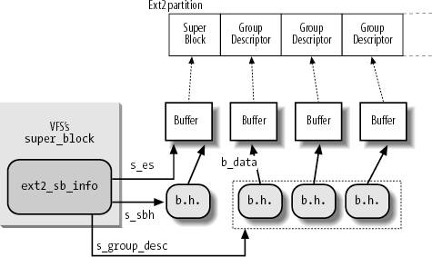

{% include JB/setup %}
{% raw %}
<div>


<a name="understandlk-CHP-18-SECT-3"></a>
<h3 class="docSection1Title">18.3. Ext2 Memory Data Structures</h3><a name="IDX-CHP-18-4377"></a>
<p class="docText1">For the sake of efficiency, most information stored in the disk data structures of an Ext2 partition are copied into RAM when the filesystem is mounted, thus allowing the kernel to avoid many subsequent disk read operations. To get an idea of how often some data structures change, consider some fundamental operations:</p>
<ul class="calibre11"><li class="calibre12"><p class="docText1">When a new file is created, the values of the <tt class="calibre25">s_free_inodes_count</tt> field in the Ext2 superblock and of the <tt class="calibre25">bg_free_inodes_count</tt> field in the proper group descriptor must be decreased.</p></li><li class="calibre12"><p class="docText1">If the kernel appends some data to an existing file so that the number of data blocks allocated for it increases, the values of the <tt class="calibre25">s_free_blocks_count</tt> field in the Ext2 superblock and of the <tt class="calibre25">bg_free_blocks_count</tt> field in the group descriptor must be modified.</p></li><li class="calibre12"><p class="docText1">Even just rewriting a portion of an existing file involves an update of the <tt class="calibre25">s_wtime</tt> field of the Ext2 superblock.</p></li></ul>
<p class="docText1">Because all Ext2 disk data structures are stored in blocks of the Ext2 partition, the kernel uses the page cache to keep them up-to-date (see the section "<a class="pcalibre5 docLink pcalibre1" href="understandlk-CHP-15-SECT-3.html#understandlk-CHP-15-SECT-3">Writing Dirty Pages to Disk</a>" in <a class="pcalibre5 docLink pcalibre1" href="understandlk-CHP-15.html#understandlk-CHP-15">Chapter 15</a>).</p>
<p class="docText1"><a class="pcalibre5 docLink pcalibre1" href="#understandlk-CHP-18-TABLE-6">Table 18-6</a> specifies, for each type of data related to Ext2 filesystems and files, the data structure used on the disk to represent its data, the data structure used by the kernel in memory, and a rule of thumb used to determine how much caching is used. Data that is updated very frequently is always cached; that is, the data is permanently stored in memory and included in the page cache until the corresponding Ext2 partition is unmounted. The kernel gets this result by keeping the page's usage counter greater than 0 at all times.</p>
<a name="understandlk-CHP-18-TABLE-6"></a><p class="calibre14"><table cellspacing="0" frame="hsides" rules="all" cellpadding="4" width="100%" class="calibre15"><caption class="calibre33"><h5 class="docFigureTitle">Table 18-6. VFS images of Ext2 data structures</h5></caption><colgroup class="calibre16"><col class="calibre17"/><col class="calibre17"/><col class="calibre17"/><col class="calibre17"/></colgroup><thead class="calibre18"><tr class="calibre34"><th class="thead" scope="col"><p class="docText1"><span class="calibre5">Type</span></p></th><th class="thead" scope="col"><p class="docText1"><span class="calibre5">Disk data structure</span></p></th><th class="thead" scope="col"><p class="docText1"><span class="calibre5">Memory data structure</span></p></th><th class="thead" scope="col"><p class="docText1"><span class="calibre5">Caching mode</span></p></th></tr></thead><tr class="calibre2"><td class="docTableCell"><p class="docText2">Superblock</p></td><td class="docTableCell"><p class="docText2"><tt class="calibre25">ext2_super_block</tt></p></td><td class="docTableCell"><p class="docText2"><tt class="calibre25">ext2_sb_info</tt></p></td><td class="docTableCell"><p class="docText2">Always cached</p></td></tr><tr class="calibre2"><td class="docTableCell"><p class="docText2">Group descriptor</p></td><td class="docTableCell"><p class="docText2"><tt class="calibre25">ext2_group_desc</tt></p></td><td class="docTableCell"><p class="docText2"><tt class="calibre25">ext2_group_desc</tt></p></td><td class="docTableCell"><p class="docText2">Always cached</p></td></tr><tr class="calibre2"><td class="docTableCell"><p class="docText2">Block bitmap</p></td><td class="docTableCell"><p class="docText2">Bit array in block</p></td><td class="docTableCell"><p class="docText2">Bit array in buffer</p></td><td class="docTableCell"><p class="docText2">Dynamic</p></td></tr><tr class="calibre2"><td class="docTableCell"><p class="docText2">inode bitmap</p></td><td class="docTableCell"><p class="docText2">Bit array in block</p></td><td class="docTableCell"><p class="docText2">Bit array in buffer</p></td><td class="docTableCell"><p class="docText2">Dynamic</p></td></tr><tr class="calibre2"><td class="docTableCell"><p class="docText2">inode</p></td><td class="docTableCell"><p class="docText2"><tt class="calibre25">ext2_inode</tt></p></td><td class="docTableCell"><p class="docText2"><tt class="calibre25">ext2_inode_info</tt></p></td><td class="docTableCell"><p class="docText2">Dynamic</p></td></tr><tr class="calibre2"><td class="docTableCell"><p class="docText2">Data block</p></td><td class="docTableCell"><p class="docText2">Array of bytes</p></td><td class="docTableCell"><p class="docText2">VFS buffer</p></td><td class="docTableCell"><p class="docText2">Dynamic</p></td></tr><tr class="calibre2"><td class="docTableCell"><p class="docText2">Free inode</p></td><td class="docTableCell"><p class="docText2"><tt class="calibre25">ext2_inode</tt></p></td><td class="docTableCell"><p class="docText2">None</p></td><td class="docTableCell"><p class="docText2">Never</p></td></tr><tr class="calibre2"><td class="docTableCell"><p class="docText2">Free block</p></td><td class="docTableCell"><p class="docText2">Array of bytes</p></td><td class="docTableCell"><p class="docText2">None</p></td><td class="docTableCell"><p class="docText2">Never</p></td></tr></table></p><br class="calibre7"/>
<p class="docText1">The never-cached data is not kept in any cache because it does not represent meaningful information. Conversely, the always-cached data is always present in RAM, thus it is never necessary to read the data from disk (periodically, however, the data must be written back to disk). In between these extremes lies the <span class="docEmphasis">dynamic</span> mode. In this mode, the data is kept in a cache as long as the associated object (inode, data block, or bitmap) is in use; when the file is closed or the data block is deleted, the page frame reclaiming algorithm may remove the associated data from the cache.</p>
<p class="docText1">It is interesting to observe that inode and block bitmaps are not kept permanently in memory; rather, they are read from disk when needed. Actually, many disk reads are avoided thanks to the page cache, which keeps in memory the most recently used disk blocks (see the section "<a class="pcalibre5 docLink pcalibre1" href="understandlk-CHP-15-SECT-2.html#understandlk-CHP-15-SECT-2">Storing Blocks in the Page Cache</a>" in <a class="pcalibre5 docLink pcalibre1" href="understandlk-CHP-15.html#understandlk-CHP-15">Chapter 15</a>).<sup class="docFootnote"><a class="pcalibre5 docLink pcalibre1" href="#understandlk-CHP-18-FN2">[*]</a></sup></p><blockquote class="calibre22"><p class="docFootnote1"><sup class="calibre24"><a name="understandlk-CHP-18-FN2">[*]</a></sup> In Linux 2.4 and earlier versions, the most recently used inode and block bitmaps were stored in ad-hoc caches of bounded size.</p></blockquote>
<a name="understandlk-CHP-18-SECT-3.1"></a>
<h4 class="docSection2Title">18.3.1. The Ext2 Superblock Object</h4><a name="IDX-CHP-18-4378"></a>
<p class="docText1">As stated in the section "<a class="pcalibre5 docLink pcalibre1" href="understandlk-CHP-12-SECT-2.html#understandlk-CHP-12-SECT-2.1">Superblock Objects</a>" in <a class="pcalibre5 docLink pcalibre1" href="understandlk-CHP-12.html#understandlk-CHP-12">Chapter 12</a>, the <tt class="calibre25">s_fs_info</tt> field of the VFS superblock points to a structure containing filesystem-specific data. In the case of Ext2, this field points to a structure of type <tt class="calibre25">ext2_sb_info</tt>, which includes the following information:</p>
<ul class="calibre11"><li class="calibre12"><p class="docText1">Most of the disk superblock fields</p></li><li class="calibre12"><p class="docText1">An <tt class="calibre25">s_sbh</tt> pointer to the buffer head of the buffer containing the disk superblock</p></li><li class="calibre12"><p class="docText1">An <tt class="calibre25">s_es</tt> pointer to the buffer containing the disk superblock</p></li><li class="calibre12"><p class="docText1">The number of group descriptors, <tt class="calibre25">s_desc_ per_block</tt>, that can be packed in a block</p></li><li class="calibre12"><p class="docText1">An <tt class="calibre25">s_group_desc</tt> pointer to an array of buffer heads of buffers containing the group descriptors (usually, a single entry is sufficient)</p></li><li class="calibre12"><p class="docText1">Other data related to mount state, mount options, and so on</p></li></ul>
<p class="docText1"><a class="pcalibre5 docLink pcalibre1" href="#understandlk-CHP-18-FIG-4">Figure 18-4</a> shows the links between the <tt class="calibre25">ext2_sb_info</tt> data structures and the buffers and buffer heads relative to the Ext2 superblock and to the group descriptors.</p>
<p class="docText1">When the kernel mounts an Ext2 filesystem, it invokes the <tt class="calibre25">ext2_fill_super( )</tt> function to allocate space for the data structures and to fill them with data read from disk (see the section "<a class="pcalibre5 docLink pcalibre1" href="understandlk-CHP-12-SECT-4.html#understandlk-CHP-12-SECT-4.3">Mounting a Generic Filesystem</a>" in <a class="pcalibre5 docLink pcalibre1" href="understandlk-CHP-12.html#understandlk-CHP-12">Chapter 12</a>). This is a simplified description of the function, which emphasizes the memory allocations for buffers and descriptors:</p>
<div class="calibre44"><ol class="docList1" type="1"><li class="calibre12"><div class="calibre45"><p class="docList">Allocates an <tt class="calibre25">ext2_sb_info</tt> descriptor and stores its address in the <tt class="calibre25">s_fs_info</tt> field of the superblock object passed as the parameter.</p><a name="understandlk-CHP-18-FIG-4"></a><p class="calibre14"><center class="calibre8">
<h5 class="docFigureTitle1">Figure 18-4. The ext2_sb_info data structure</h5>
</center></p></div></li><li class="calibre12"><div class="calibre45"><p class="docList">Invokes <tt class="calibre25">_ _bread( )</tt> to allocate a buffer in a buffer page together with the corresponding buffer head, and to read the superblock from disk into the buffer; as discussed in the section "<a class="pcalibre5 docLink pcalibre1" href="understandlk-CHP-15-SECT-2.html#understandlk-CHP-15-SECT-2.6">Searching Blocks in the Page Cache</a>" in <a class="pcalibre5 docLink pcalibre1" href="understandlk-CHP-15.html#understandlk-CHP-15">Chapter 15</a>, no allocation is performed if the block is already stored in a buffer page in the page cache and it is up-to-date. Stores the buffer head address in the <tt class="calibre25">s_sbh</tt> field of the Ext2 superblock object.</p></div></li><li class="calibre12"><div class="calibre45"><p class="docList">Allocates an array of bytesone byte for each groupand stores its address in the <tt class="calibre25">s_debts</tt> field of the <tt class="calibre25">ext2_sb_info</tt> descriptor (see the section "<a class="pcalibre5 docLink pcalibre1" href="understandlk-CHP-18-SECT-6.html#understandlk-CHP-18-SECT-6.1">Creating inodes</a>" later in this chapter).</p></div></li><li class="calibre12"><div class="calibre45"><p class="docList">Allocates an array of pointers to buffer heads, one for each group descriptor, and stores the address of the array in the <tt class="calibre25">s_group_desc</tt> field of the <tt class="calibre25">ext2_sb_info</tt> descriptor.</p></div></li><li class="calibre12"><div class="calibre45"><p class="docList">Invokes repeatedly <tt class="calibre25">_ _bread( )</tt> to allocate buffers and to read from disk the blocks containing the Ext2 group descriptors; stores the addresses of the buffer heads in the <tt class="calibre25">s_group_desc</tt> array allocated in the previous step.</p></div></li><li class="calibre12"><div class="calibre45"><p class="docList">Allocates an inode and a dentry object for the root directory, and sets up a few fields of the superblock object so that it will be possible to read the root inode from disk.</p></div></li></ol></div>
<p class="docText1">Clearly, all the data structures allocated by <tt class="calibre25">ext2_fill_super( )</tt> are kept in memory after the function returns; they will be released only when the Ext2 filesystem will be unmounted. When the kernel must modify a field in the Ext2 superblock, it simply writes the new value in the proper position of the corresponding buffer and then marks the buffer as dirty.</p>
<a name="understandlk-CHP-18-SECT-3.2"></a>
<h4 class="docSection2Title">18.3.2. The Ext2 inode Object</h4>
<p class="docText1">When opening a file, a pathname lookup is performed. For each component of the pathname that is not already in the dentry cache<a name="IDX-CHP-18-4379"></a> 
, a new dentry object and a new inode object are created (see the section "<a class="pcalibre5 docLink pcalibre1" href="understandlk-CHP-12-SECT-5.html#understandlk-CHP-12-SECT-5.1">Standard Pathname Lookup</a>" in <a class="pcalibre5 docLink pcalibre1" href="understandlk-CHP-12.html#understandlk-CHP-12">Chapter 12</a>). When the VFS accesses an Ext2 disk inode, it creates a corresponding <span class="docEmphasis">inode descriptor</span> of type <tt class="calibre25">ext2_inode_info</tt>. This descriptor includes the following information:</p>
<ul class="calibre11"><li class="calibre12"><p class="docText1">The whole VFS inode object (see <a class="pcalibre5 docLink pcalibre1" href="understandlk-CHP-12-SECT-2.html#understandlk-CHP-12-TABLE-3">Table 12-3</a> in <a class="pcalibre5 docLink pcalibre1" href="understandlk-CHP-12.html#understandlk-CHP-12">Chapter 12</a>) stored in the field <tt class="calibre25">vfs_inode</tt></p></li><li class="calibre12"><p class="docText1">Most of the fields found in the disk's inode structure that are not kept in the VFS inode</p></li><li class="calibre12"><p class="docText1">The <tt class="calibre25">i_block_group</tt> block group index at which the inode belongs (see the section "<a class="pcalibre5 docLink pcalibre1" href="understandlk-CHP-18-SECT-2.html#understandlk-CHP-18-SECT-2">Ext2 Disk Data Structures</a>" earlier in this chapter)</p></li><li class="calibre12"><p class="docText1">The <tt class="calibre25">i_next_alloc_block</tt> and <tt class="calibre25">i_next_alloc_goal</tt> fields, which store the logical block number and the physical block number of the disk block that was most recently allocated to the file, respectively</p></li><li class="calibre12"><p class="docText1">The <tt class="calibre25">i_prealloc_block</tt> and <tt class="calibre25">i_prealloc_count</tt> fields, which are used for data block preallocation (see the section "<a class="pcalibre5 docLink pcalibre1" href="understandlk-CHP-18-SECT-6.html#understandlk-CHP-18-SECT-6.5">Allocating a Data Block</a>" later in this chapter)</p></li><li class="calibre12"><p class="docText1">The <tt class="calibre25">xattr_sem</tt> field, a read/write semaphore that allows extended attributes to be read concurrently with the file data</p></li><li class="calibre12"><p class="docText1">The <tt class="calibre25">i_acl</tt> and <tt class="calibre25">i_default_acl</tt> fields, which point to the ACLs of the file</p></li></ul>
<p class="docText1">When dealing with Ext2 files, the <tt class="calibre25">alloc_inode</tt> superblock method is implemented by means of the <tt class="calibre25">ext2_alloc_inode( )</tt> function. It gets first an <tt class="calibre25">ext2_inode_info</tt> descriptor from the <tt class="calibre25">ext2_inode_cachep</tt> slab allocator cache, then it returns the address of the inode object embedded in the new <tt class="calibre25">ext2_inode_info</tt> descriptor.</p>
<a href="31071535.html"></a>
<br class="calibre7"/>

</div>

{% endraw %}

